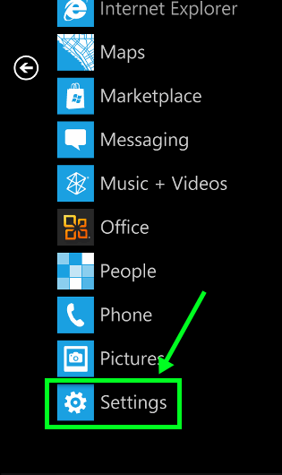
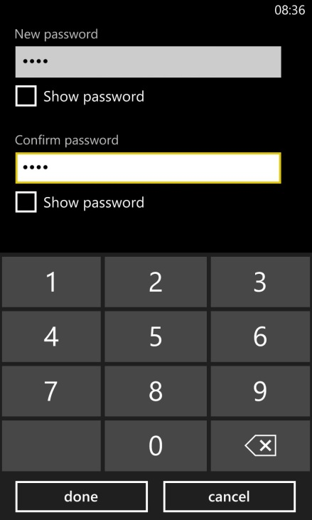

Setting up a password on your Windows Phone
1) In the App list, Go to Settings -> Lock screen
2) Slide the Password button to the on position
3) Enter your desired password in the New Password section and then re-enter it in the Confirm Password text box
4) Tap Done to save your changes
Tip: You may want to set a time limit for the password requirement. This locks the phone after the desired length of time. To do this, tap Require a Password After and select the desired length of time
Encrypting data on your Windows Phone
Notice:
Windows Phone currently only supports device encryption when using an exchange ActiveSync account. Talk to your administrative department about enabling this feature.
content